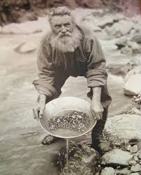

Historia de San Francisco, California, Estados Unidos
San Francisco es una ciudad ubicada en el extremo norte de la península de San Francisco, en el estado de California, Estados Unidos. Es la cuarta ciudad más poblada de California y la 17ª más poblada de los Estados Unidos, con una población de 873.952 habitantes en 2020. La historia de San Francisco se remonta a la época de los nativos americanos, que habitaban la región durante miles de años antes de la llegada de los europeos. En el siglo XVIII, la bahía de San Francisco fue explorada por los españoles, que la llamaron "Bahía de Nuestra Señora de los Ángeles". En 1821, California pasó a formar parte de México, y la bahía de San Francisco se convirtió en un importante puerto comercial.
|
Fiebre del oro
|
 |
|
Terremoto y fuego de 1906
|
|

|
Siglo XX
|
|
Siglo XXI
|
Principales hitos históricos
- 1579: El explorador español Sebastián Vizcaíno explora la bahía de San Francisco.
- 1776: Los españoles fundan el Presidio de San Francisco.
- 1821: California pasa a formar parte de México.
- 1848: Se descubre oro en el valle de Coloma, lo que provoca la fiebre del oro de California.
- 1849: San Francisco se convierte en un importante centro de comercio y transporte durante la fiebre del oro.
- 1856: San Francisco se convierte en una ciudad-condado consolidada.
- 1906: Un terremoto y un incendio arrasan gran parte de la ciudad.
- 1915: San Francisco es sede de la Exposición Internacional de Panamá-Pacífico.
- 1970: San Francisco se convierte en un importante centro de la contracultura.
- 1989: Un terremoto de magnitud 6,9 sacude la región de San Francisco.
- 1997: Se inaugura el Puente Golden Gate.
- 2000: San Francisco celebra su bicentenario.
- 2014: Se abre el Canal de Panamá, lo que aumenta el comercio a través de la bahía de San Francisco.
- 2020: San Francisco es afectada por la pandemia de COVID-19.